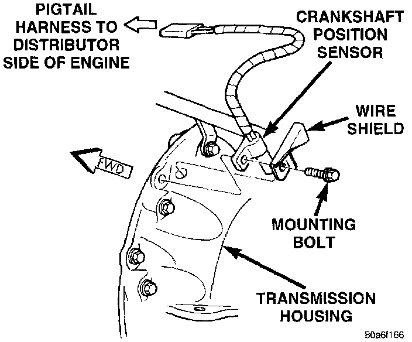

Crankshaft Position Sensor: Service and Repair
CRANKSHAFT POSITION SENSORFig. 31 CKP Sensor:

The crankshaft position sensor is mounted to the transmission bellhousing at the left/rear side of the engine block (Fig. 31). The sensor is attached with one bolt. A wire shield/router is attached to the sensor (Fig. 31).
REMOVAL
1. Disconnect sensor pigtail harness (3-way connector) from main engine wiring harness. This connection is made near rear of distributor.
2. Remove sensor mounting bolt.
3. Remove wire shield and sensor.
INSTALLATION
1. Position sensor flush against machined area and into opening on transmission bellhousing.
2. Position sensor wire shield to sensor (Fig. 31).
3. Install bolt through wire shield and sensor.
4. Tighten sensor mounting bolt to 7 Nm (60 in. lbs.) torque.
5. Route wiring harness into wire shield.
6. Connect 3-way sensor electrical connectors.